Le couscous, dans les règles de l'art
Un concept de couscous artisanal pensé pour Riyad : une cuisine de production efficace, une carte courte de quatre recettes, un service rapide et un développement progressif en réseau.
KOOSKOOS lance une marque spécialisée de couscous premium, avec une première implantation en dark kitchen à Riyad. Le financement couvre la constitution, l'installation, le personnel, le stock, le marketing et une réserve de fonctionnement.
| Indicateur | Hypothèse retenue |
|---|---|
| Besoin recommandé | 550 000 SAR, arrondi de 548 400 SAR |
| Investissement de lancement | 323 400 SAR, réserve initiale incluse |
| Réserve d'exploitation | 225 000 SAR, soit 6 mois de charges fixes |
| Équipe | 4 collaborateurs polyvalents |
| Produits | Poulet, agneau, merguez, végétarien |
| Prix de vente TTC | 69 / 89 / 79 / 59 SAR |
| Ouverture | Déjeuner et dîner ; 11 h–23 h est une proposition de planification, non un horaire arrêté |
| Distribution | Plateformes de livraison, commandes directes, B2B et commandes groupées |
Le produit central est le couscous, en bowl individuel pour la livraison et en formats adaptés aux commandes de groupe. Le concept repose sur la maîtrise de la semoule vapeur, des bouillons, des légumes, des protéines et de la régularité de portionnement.
Quatre références plutôt qu'une carte étendue, des recettes standardisées, un bouillon séparé pour préserver les textures pendant le transport et un conditionnement pensé pour la livraison.
Des couscous sont déjà vendus à Riyad. KOOSKOOS se distingue par la spécialisation, la constance, une identité forte, la présentation premium et une production centralisée déployable.
Ce positionnement reste une hypothèse commerciale, validée par les ventes et les réachats pendant les premiers mois.
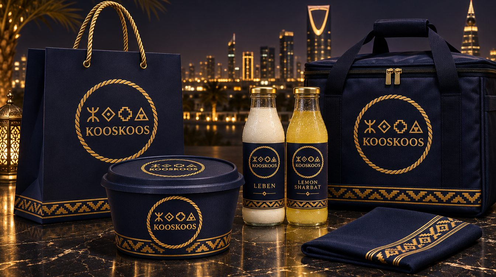
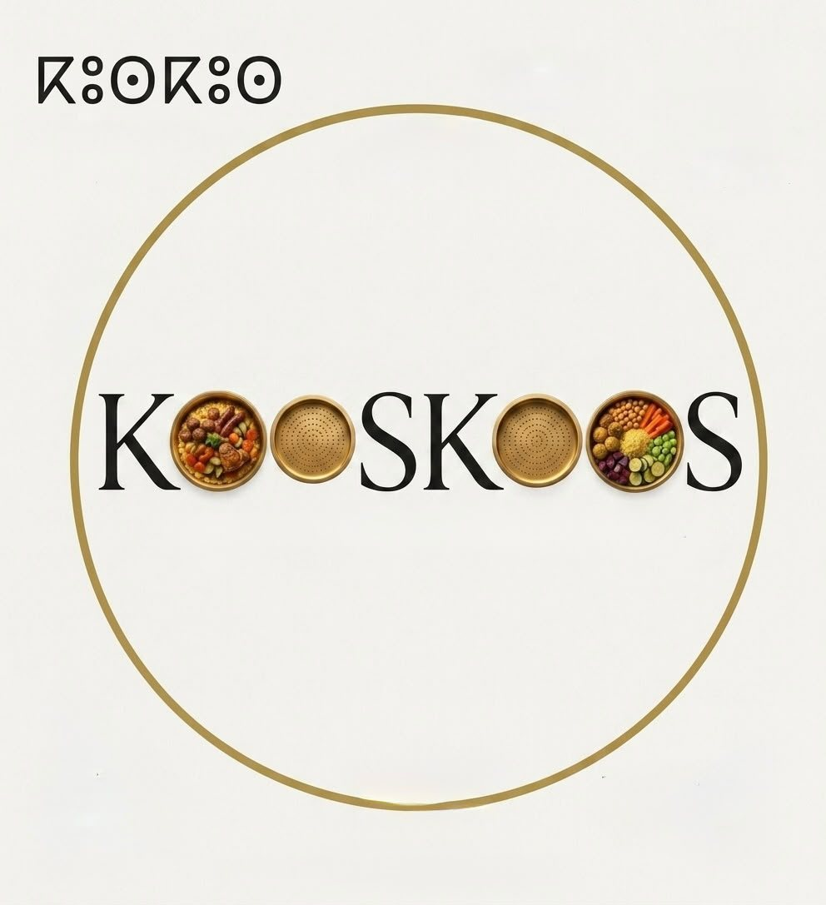
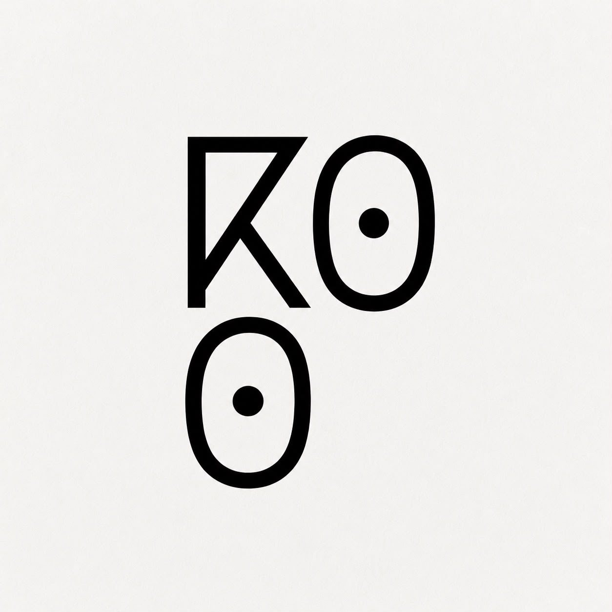
Trois phrases, trois usages : chacune a un rôle précis pour que la marque reste lisible partout.
Le cri de plaisir qui dit « bien » en arabe (كويس) et sonne comme « couscous ». C'est l'emblème : dit à voix haute dans le film, repris en jingle, sur les réseaux et en dernière image.
Gravée sous le sceau : elle dit l'origine et l'invitation, sur chaque bowl, sac et serviette.
Voix off, dossiers, B2B et contenus de marque : elle porte le sérieux de la production.
Quatre références limitent la complexité de production, les stocks et les erreurs de préparation. Déplacez les curseurs pour tester un autre mix de ventes : le prix moyen alimente le simulateur plus bas.
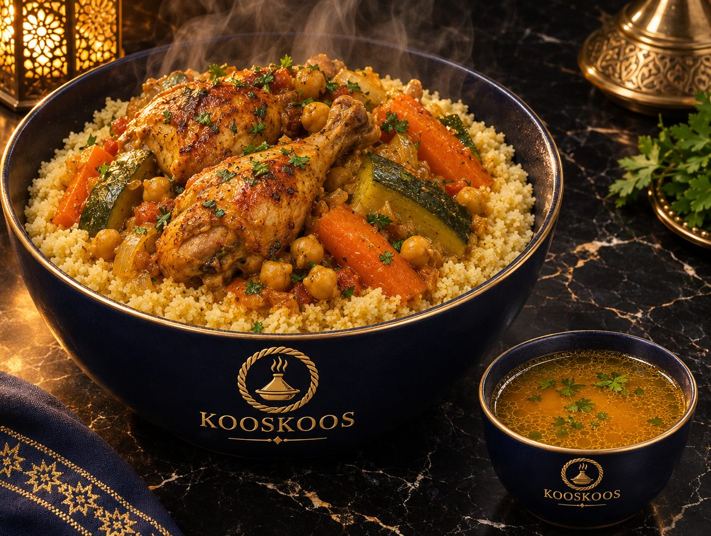
69 SAR TTC · produit d'appel
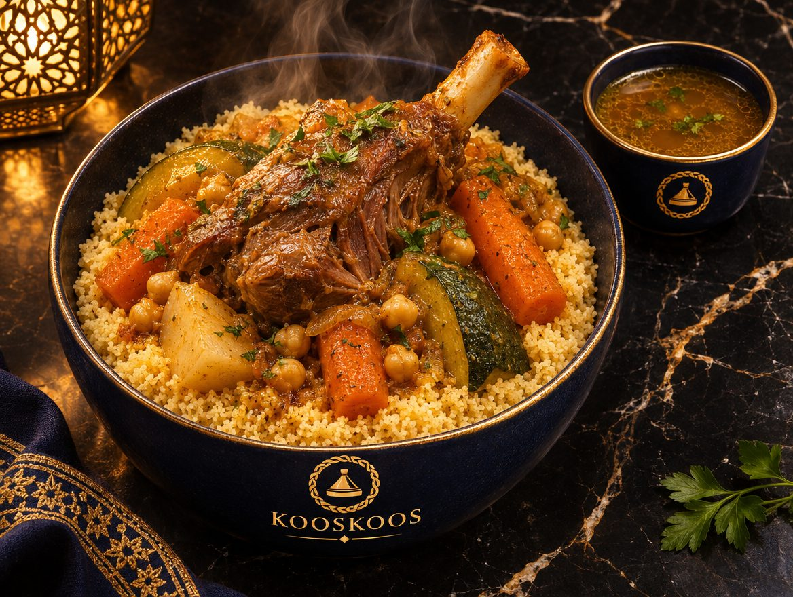
89 SAR TTC · référence premium
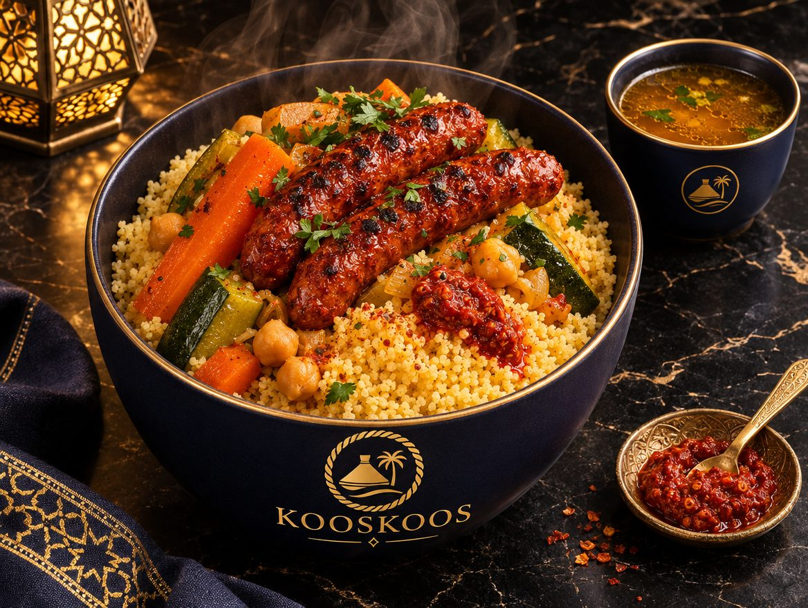
79 SAR TTC · épicée, signature
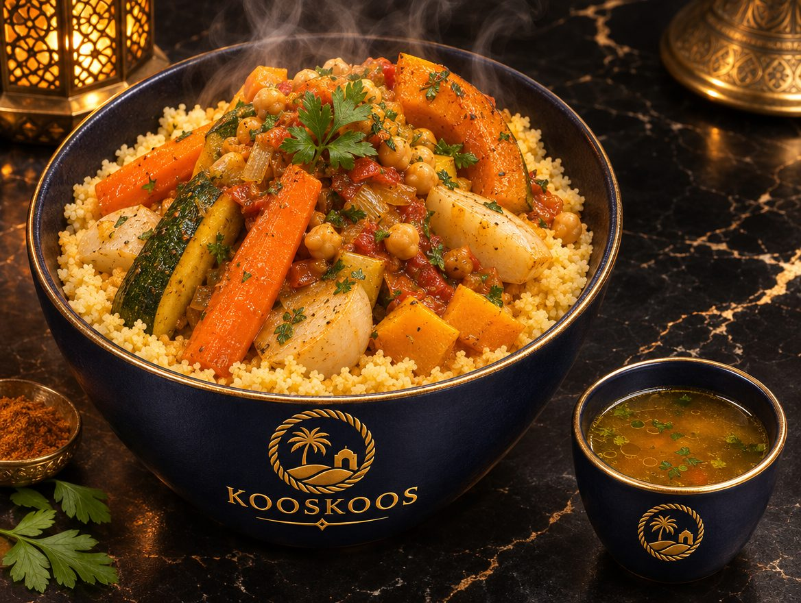
59 SAR TTC · bouillon dédié
Base de travail par bowl : 90 g de couscous sec, 60 g de carotte, 70 g de courgette, 40 g de navet, 35 g d'oignon, 30 g de tomate, 20 g de pois chiches secs, 10 g de concentré, 10 g d'huile, 5 g d'épices et de sel, 120 à 150 ml de bouillon séparé. Ces grammages sont des prototypes de costing, à valider par des fiches techniques testées.
| Recette | Protéine / ajout cru | Point de contrôle |
|---|---|---|
| Poulet | 180 g avec os | Rendement comestible, régularité de portion |
| Agneau | 160 g avec os | Rendement, prix d'achat, durée de cuisson |
| Merguez | 140 g | Approvisionnement, perte de cuisson |
| Végétarien | Légumes et pois chiches additionnels | Bouillon végétal distinct, aucun fond carné |
La présence de restaurants maghrébins et de couscous sur les plateformes montre que la catégorie est connue. Elle ne garantit pas, à elle seule, une demande suffisante pour une marque spécialisée : la grille de prix est donc testée sur la conversion et le réachat.
| Segment | Besoin | Approche KOOSKOOS |
|---|---|---|
| Résidentiel | Déjeuner / dîner livré | Menu court, commande simple, qualité de transport |
| Bureaux et entreprises | Repas de travail, groupes, événements | Offres groupées, précommande, facturation B2B |
| Familles et groupes | Repas à partager | Formats à développer après validation du lancement |
| Clients d'une cuisine authentique | Goût, provenance, expérience | Signature de marque et régularité |
Prix de carte publics relevés (couscous et plats marocains de référence), à revérifier sur HungerStation et Jahez avant la rencontre investisseur. Indicatif uniquement.
| Enseigne / plat | Prix SAR | Source |
|---|---|---|
| Château Marrakech · couscous légumes | 51 | Tayar Media, mai 2026 |
| Château Marrakech · couscous tfaya | 65 | Tayar Media, mai 2026 |
| Oshal · couscous poulet marocain | 73 | Ananinja |
| Château Marrakech · couscous poulet | 75 | Tayar Media, mai 2026 |
| Château Marrakech · agneau et légumes | 79 | Tayar Media, mai 2026 |
| Château Marrakech · couscous royal | 150 | Tayar Media, mai 2026 |
| Tanjiah · tajine poulet | 58–63 | Benchmark interne, sept. 2026 |
| Tanjiah · tajine agneau | 79–84 | Benchmark interne, sept. 2026 |
| White Garden · tajine bœuf | ~77 | Benchmark interne, sept. 2026 |
| CASA Moroccan · plat viande / poisson | ~86 / ~75 | Benchmark interne, sept. 2026 |
| Marché Riyad · couscous poulet | ~74 | Benchmark interne, sept. 2026 |
| KOOSKOOS · végétarien / poulet / merguez / agneau | 59 / 69 / 79 / 89 | Notre grille, TTC |
Lecture : KOOSKOOS se place au milieu de la fourchette observée pour les plats à une protéine, sous les formats royaux, dans un bowl pensé pour la livraison.
La livraison est le canal principal au lancement, complétée par la vente directe pour réduire la dépendance aux commissions. Le B2B passe par la prospection ciblée de bureaux, commandes d'équipe, réunions et événements. La stratégie privilégie la répétition des commandes plutôt que le seul volume de promotions.
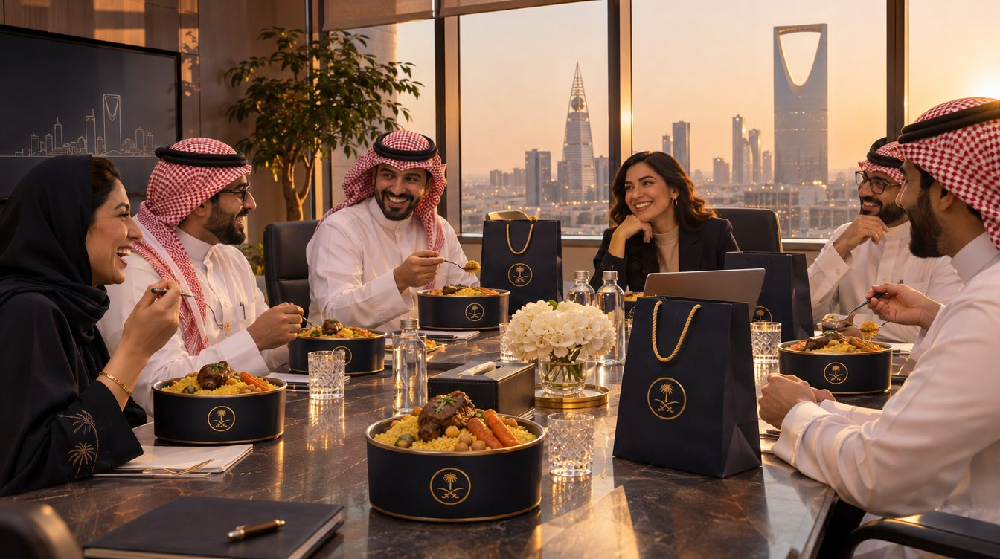
Préparation en amont des pics, finition rapide à la demande. La dark kitchen n'est pas un simple point de réchauffage : c'est le premier centre de production et le futur référent qualité du réseau.
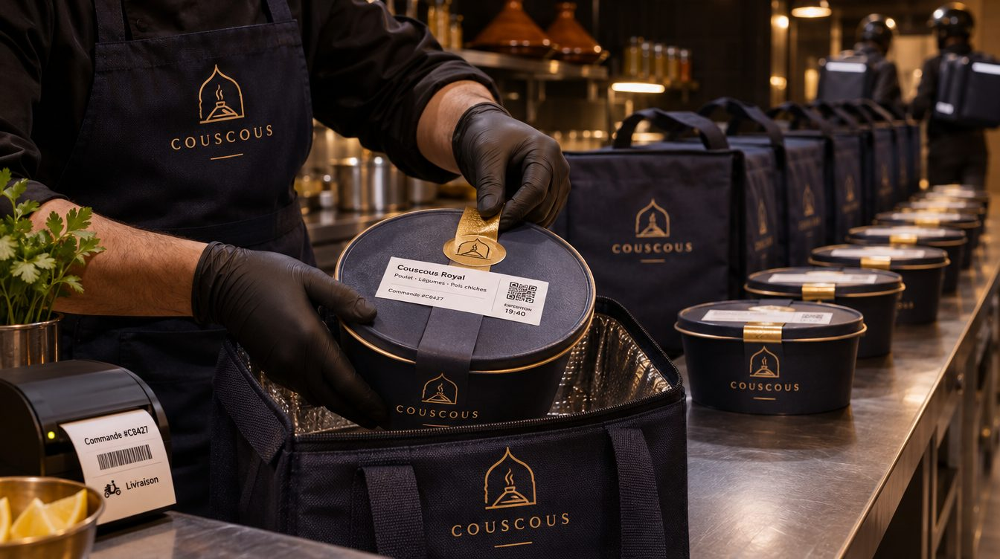
Hypothèse budgétaire : loyer de 6 000 SAR par mois, caution de 12 000 SAR et activation de 6 000 SAR. Ce n'est pas une offre contractuelle signée. Les scénarios de vente vont de 30 à 100 bowls par jour, des volumes à tester, non des capacités garanties.
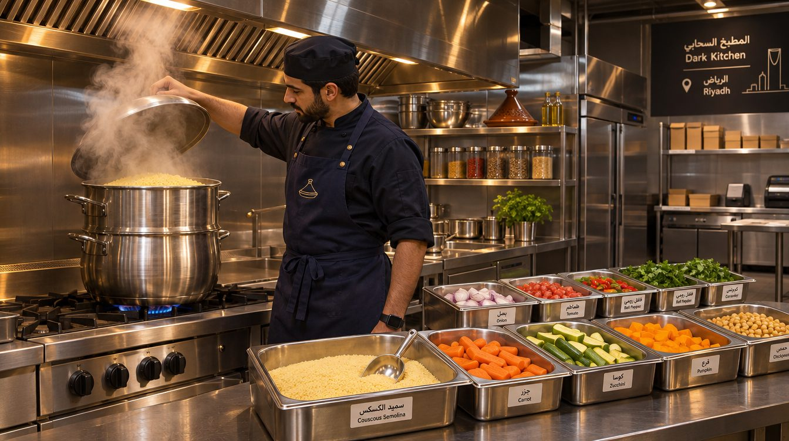
| Constitution de la société et démarches (deux licences) | 110 000 |
| Licences, autorisations, conformité | 10 000 |
| Total | 120 000 |
Les équipements de la première cuisine sont rapprochés de ce que la location inclut déjà, pour éviter les doublons. Les satellites futurs n'auront pas besoin du même parc de cuisson.
Trois personnes en poste, une en repos selon rotation. Masse salariale de référence : 4 × 3 500 SAR, soit 14 000 SAR par mois. Les fonctions ci-dessous sont à couvrir ; elles ne sont pas encore des intitulés de contrat.
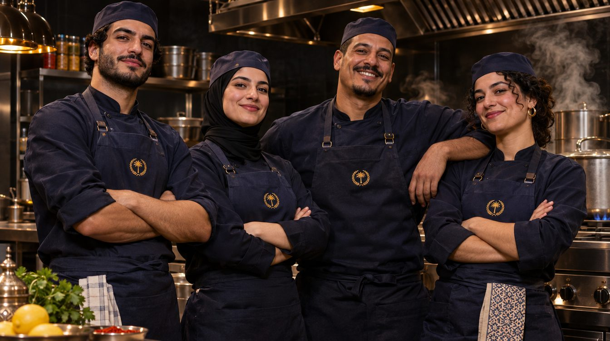
Référent cuisine : cuisson, standards, qualité, rendements, préparation.
Mise en place, pesée, garniture, contrôle de portion.
Packaging, étiquetage, relation coursiers, exactitude.
Réception, nettoyage, réassort, couverture des pics.
| Plage indicative | Activité dominante |
|---|---|
| Avant 11 h | Mise en place, cuisson et contrôle |
| 11 h – 15 h | Service déjeuner, livraison et B2B (premier pic) |
| 15 h – 18 h | Réassort, production et préparation du service du soir |
| 18 h – 23 h | Service dîner et livraison (second pic) |
| Après service | Nettoyage, relevés, clôture |
Les jours de repos, pauses et heures supplémentaires respecteront le droit du travail et les volumes observés. Logement et transport : 3 000 SAR par mois (36 000 SAR par an), inclus dans les charges fixes.
Cette enveloppe inclut 25 000 SAR de trésorerie initiale et 15 000 SAR d'imprévus : elle ne se compose pas uniquement d'achats consommés.
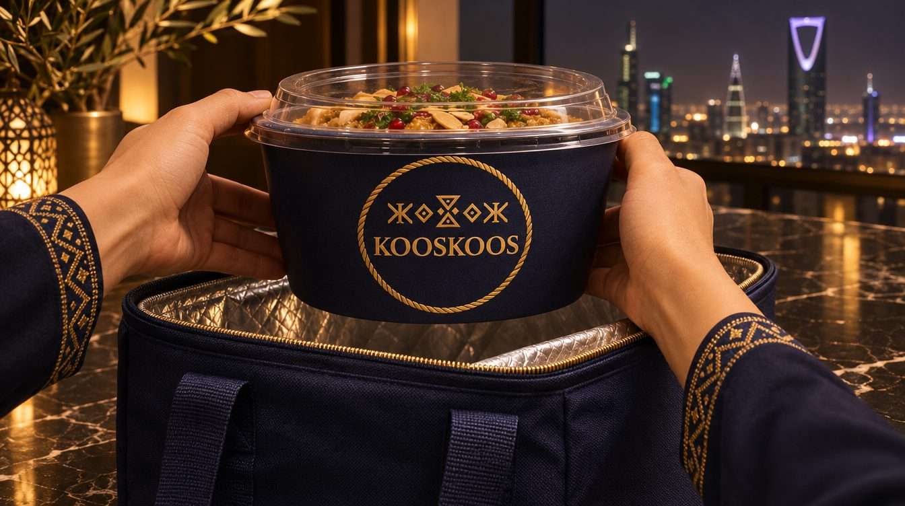
Choisissez le nombre de mois de charges fixes placés en réserve. Le dossier recommande six mois.
Base des scénarios de réserve. Elle ne comprend pas le coût variable des bowls vendus (matières, emballages, commissions).
Les valeurs de départ sont celles du dossier. Modifiez-les pour mesurer la sensibilité du modèle. La marge contributive est calculée après matière, emballage, commission et traitement du paiement, avant charges fixes.
Résultats d'exploitation simulés, avant amortissements, financement, impôt et rémunération des associés. Ils ne constituent ni un retour garanti ni une promesse de ventes.
L'hypothèse centrale atteint 65 bowls par jour au douzième mois. Ce sont des hypothèses de planification, non des commandes prévendues. Les courbes se recalculent avec les paramètres du simulateur.
Le creux de trésorerie cumulé est un calcul dérivé des hypothèses ci-dessus : somme des résultats d'exploitation mensuels, avant formalités et investissements d'ouverture, financés séparément.
Lecture de trésorerie pour l'investisseur, non échéancier contractuel. La trésorerie disponible n'est pas un bénéfice distribuable.
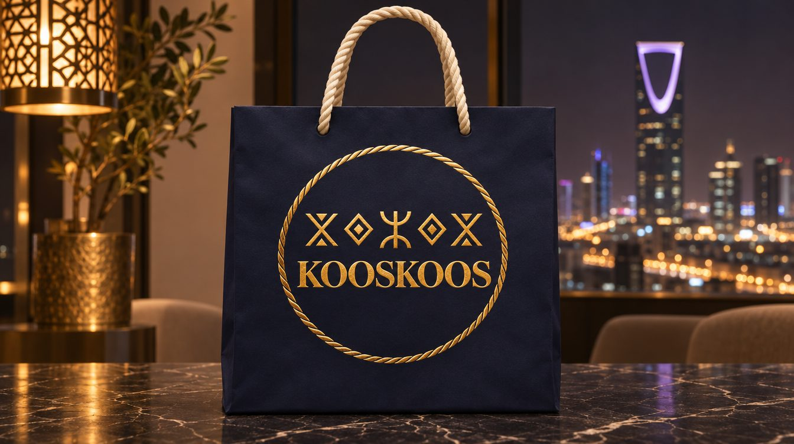
Production complète : semoule, bouillons, viandes, légumes, contrôle qualité, stockage, expéditions. Stabilise les recettes, mesure les volumes, forme les équipes.
Stockage sécurisé, remise en température, finition, assemblage et distribution à partir des préparations de l'unité centrale. Peu d'équipement lourd, produit homogène.
Projet de développement, une fois la livraison éprouvée : format (kiosque, point de retrait ou autre) et capacité de production à définir, à financer et dimensionner séparément.
| Format futur | Ordre de grandeur non engagé |
|---|---|
| Dark kitchen satellite supplémentaire | 150 000 – 250 000 SAR par unité, à redimensionner |
| Projet de développement (format à définir) | À chiffrer après preuve du marché |
Ces montants ne sont pas inclus dans les 550 000 SAR demandés.
La deuxième implantation ne se déclenche pas parce qu'une réserve existe, mais sur des critères observés pendant plusieurs mois. Cochez pour simuler un bilan.
| Risque | Réponse prévue |
|---|---|
| Démarrage commercial lent | Réserve de six mois, suivi hebdomadaire des volumes |
| Marge dégradée par les plateformes | Développer commandes directes et B2B, piloter les promotions |
| Variabilité des matières | Fiches techniques, pesées, contrôle des rendements, achats négociés |
| Rupture de qualité en livraison | Bouillon séparé, tests de packaging, contrôle au départ |
| Capacité insuffisante | Essais de production avant déploiement, ajustement des batchs |
| Engagements juridiques et locatifs | Confirmer la structure d'exploitation et les conditions HOT avant signature |
Bowls par jour et par service
Traction commerciale
Panier moyen TTC
Mix de produits
Marge contributive par commande
Revenu après coûts variables
Taux de réachat
Satisfaction et fidélisation
Part direct / plateformes / B2B
Dépendance aux intermédiaires
Temps de préparation et erreurs
Exécution
Rythme de suivi : rapport quotidien commandes et chiffre d'affaires, contrôle matières et pertes, suivi hebdomadaire du marketing, compte de résultat mensuel, tableau de trésorerie prévisionnelle glissant.
KOOSKOOS réunit un concept spécialisé, une première unité de production maîtrisable, une carte courte et une distribution adaptée à Riyad. Le projet ne repose pas sur l'ouverture d'un restaurant coûteux : il débute par une dark kitchen qui teste la demande et prépare un réseau.
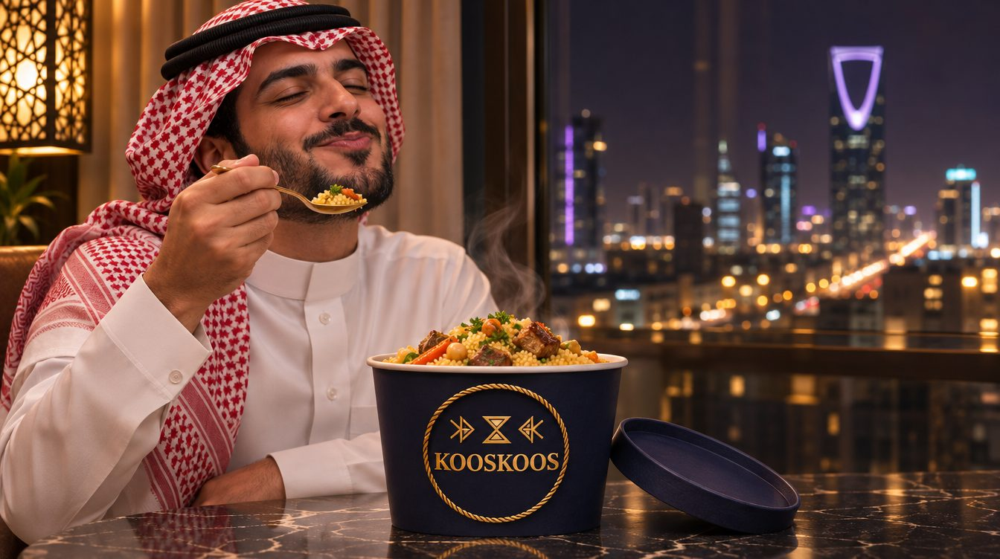
Lancement et six mois de charges fixes en réserve. Les modalités de participation, la répartition du capital et les droits de gouvernance feront l'objet d'une discussion séparée ; aucun pourcentage de parts n'est présumé dans ce dossier.